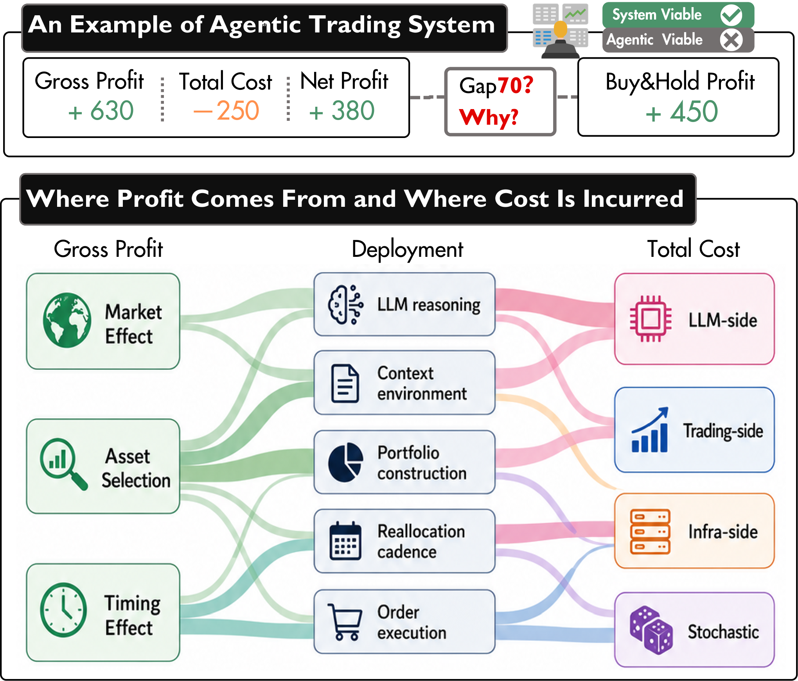
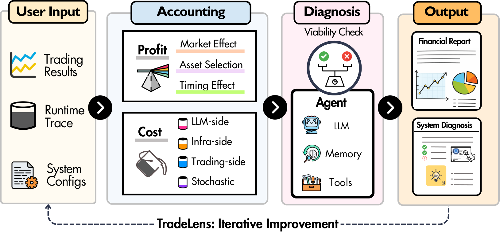
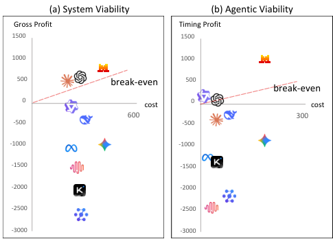
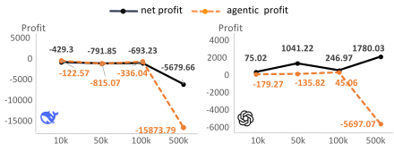
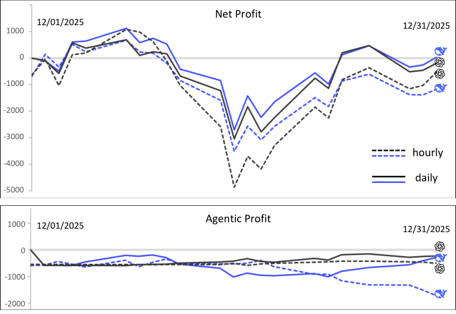

Large language model (LLM) agents are increasingly used in trading systems, where model reasoning, tool use, and continual decisions incur costs that are expected to produce trading value. Existing evaluations typically report performance metrics, but rarely examine agentic viability: whether dynamic LLM-mediated decisions convert their induced costs into measurable incremental profit.
Despite promising results, a profit-side and cost-side double blind remains. Gross profit can overstate decision value when the agent does not outperform passive market exposure, and can overstate deployability when end-to-end costs absorb the realized margin.
To apply this criterion, we introduce TradeLens, a trace-grounded diagnostic toolkit for evaluating agentic trading systems from their trading records, runtime traces, and deployment configurations. It reconstructs trading trajectories, attributes profit and cost to interpretable evidence, and diagnoses whether and why an agent pays for its own intelligence.
Key finding: viability hinges on intelligence-to-profit conversion: models exhibit different failure patterns, such as poor asset selection in DeepSeek-V3.2 and negative timing in GLM-4.7, while capital scale, trading frequency, and architecture matter only by amplifying or degrading decision-attributed timing value.

Figure 1: Motivation. A profitable agentic trading system may still fail to create useful trading value, and diagnosing “Why” is challenging because both returns and costs arise from intertwined deployment drivers.
The design goal of TradeLens is to make agentic trading systems auditable without assuming a specific agent architecture. TradeLens therefore defines a trace interface around three inputs: trading results, runtime traces, and system configurations.

Figure 2: The pipeline overview. Retail traders can utilize the toolkit to evaluate the profit–cost viability of their own agentic systems under realistic assumptions by providing trading results, runtime traces, and basic configurations. Consequently, they can gain iterative improvements and achieve promising results.
Given an evaluation window $[1,T]$, let $V_0$ be the initial portfolio value and $V_T^{\mathrm{dyn}}$ be the realized terminal value of the deployed agentic system. The cumulative gross profit is
$$P_{1:T}=V_T^{\mathrm{dyn}}-V_0.$$
For diagnosis, we separate gross profit using two nested counterfactual baselines. Let $V_T^{\mathrm{sys}}$ denote the terminal value of a passive market benchmark, and let $V_T^{\mathrm{base}}$ denote the terminal value obtained by holding the system’s initial allocation unchanged. Then
$$P_{1:T}=P^{\mathrm{sys}}+P^{\mathrm{asset}}+P^{\mathrm{timing}},$$
where $P^{\mathrm{sys}}$, $P^{\mathrm{asset}}$, and $P^{\mathrm{timing}}$ correspond to market exposure, asset selection, and timing decisions, respectively. In our analysis, $P^{\mathrm{timing}}$ is treated as the profit component most directly attributable to agentic intervention. Costs are decomposed as LLM inference, trading execution, infrastructure and data-access, and residual stochastic terms.
System viability asks whether the fully deployed pipeline pays for itself:
$$R_{1:T}=P_{1:T}-C_{1:T},\qquad \mathrm{SystemViable}=\mathbb{I}\!\left[R_{1:T}\geq 0\right].$$
Agentic viability asks whether dynamic agent intervention itself is economically justified, comparing timing profit against decision-induced costs:
$$R_{1:T}^{\mathrm{agent}}=P^{\mathrm{timing}}-C_{1:T}^{\mathrm{dyn}},\qquad \mathrm{AgenticViable}=\mathbb{I}\!\left[R_{1:T}^{\mathrm{agent}}\geq 0\right].$$
The accounting layer reconstructs the trading trajectory and attributes both profit and cost. The profit module replays trading actions to recover portfolio values and decomposes gross profit into market, selection, and timing effects. The cost module accounts for commissions, LLM usage, infrastructure, data subscriptions, and uncertainty costs. The diagnosis layer converts these audit results into viability checks, failure-mode identification, and revision suggestions, rendered as a financial report and an agentic system diagnosis report.
We instantiate TradeLens on top of a representative agentic trading system, AI-Trader, over a fixed universe of liquid U.S. equities from December 1, 2025 to January 30, 2026, starting with an initial capital of $100,000. We vary backbone model, capital scale, trading frequency, and system architecture.
Backbones differ mainly in how similar intelligence costs are converted into timing value and net margin. Failure modes also differ: some models, such as DeepSeek-V3.2, suffer mainly from poor asset selection; others, such as GLM-4.7, are dominated by negative timing effects.

Figure 3: Viability across backbone models. (a) System viability and (b) agentic viability: profit (y-axis) versus cost (x-axis) for 10 backbone LLMs under identical trading configurations.
| Metric | DeepSeek-V3.2 | Qwen3-Max | GLM-4.7 | GPT-5.2 | Claude Sonnet 4.5 | Mistral-large-3 |
|---|---|---|---|---|---|---|
| Gross Profit | −388.29 | 505.76 | −2554.81 | −50.43 | 519.40 | 777.81 |
| Timing Effect | −239.30 | 95.65 | −2152.06 | 125.46 | −326.02 | 1040.14 |
| Total Cost | 304.86 | 258.79 | 296.95 | 223.04 | 255.04 | 414.82 |
| Net Profit | −693.15 | 246.97 | −2851.76 | −273.47 | 264.36 | 362.99 |
| Agentic Profit | −335.96 | 45.06 | −2240.81 | 111.83 | −372.86 | 833.52 |
Capital scaling does not simply dilute fixed costs; it amplifies the value and risk of model’s timing behavior.

Figure 4: Viability across capital scale. Net Profit and Agentic Profit under varying initial cash investment scale for GPT-5.2 and DeepSeek-V3.2.
Higher frequency fails when extra decisions add noisy trades and timing errors. For both backbones, daily trading outperforms hourly trading in terms of both net profit and agentic profit.

Figure 5: Viability across trading frequency. Cumulative net profit and agentic profit over time under hourly (dashed) and daily (solid) trading frequencies for GPT-5.2 and DeepSeek-V3.2.
CoT has the lowest total cost for both backbones, but it does not produce the best outcomes. DeepFund is the only architecture with positive net profit and agentic profit for DeepSeek-V3.2, and it also yields the highest values for GPT-5.2. Architectural complexity helps only when its added reasoning and coordination become decision-attributed gains, especially timing value.
The paper provides further analysis beyond the results above. For the following, we refer readers to the full paper:
Market regimes reshape profit sources more strongly than system costs
Whether December diagnostic signals usefully inform later deployment decisions
Interpretability of joint profit–cost diagnosis in private deployments (13 retail traders)
Diagnostic observations under specific settings, not general claims about intrinsic trading ability
📄 For complete experimental protocols, additional results, and comprehensive discussions
Read the Full PaperDuan et al., "Can Agentic Trading Systems Pay for Their Own Intelligence?", Findings of EMNLP 2026
If you find TradeLens useful for your research, please consider citing our paper:
@article{duan2026can,
title={Can Agentic Trading Systems Pay for Their Own Intelligence?},
author={Duan, Qiqi and Li, Changlun and Wang, Chen and Zhang, Fan and Wang, Mengxiang and Miao, Dayi and Ma, Peixian and Yan, Jiangpeng and Chen, Liyuan and Liu, Shuoling and Nakov, Preslav and Luo, Yuyu and Tang, Nan},
journal={Findings of the Association for Computational Linguistics: EMNLP 2026},
year={2026}
}